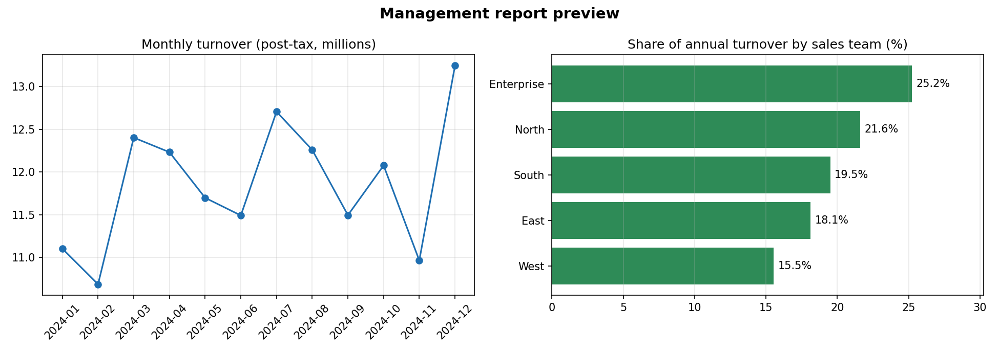

Automated reporting pipeline with data controls
- Problem
- Monthly reports were built by hand from raw transactions full of duplicates, missing values and codes that matched nothing.
- What I built
- Python cleans and validates, SQL aggregates, Power BI refreshes on a schedule. Bad rows are quarantined with a reason, never deleted, and the run stops if too much data fails.
- Result
- About 35% less manual reporting time, and only complete, accurate figures reach reports.
